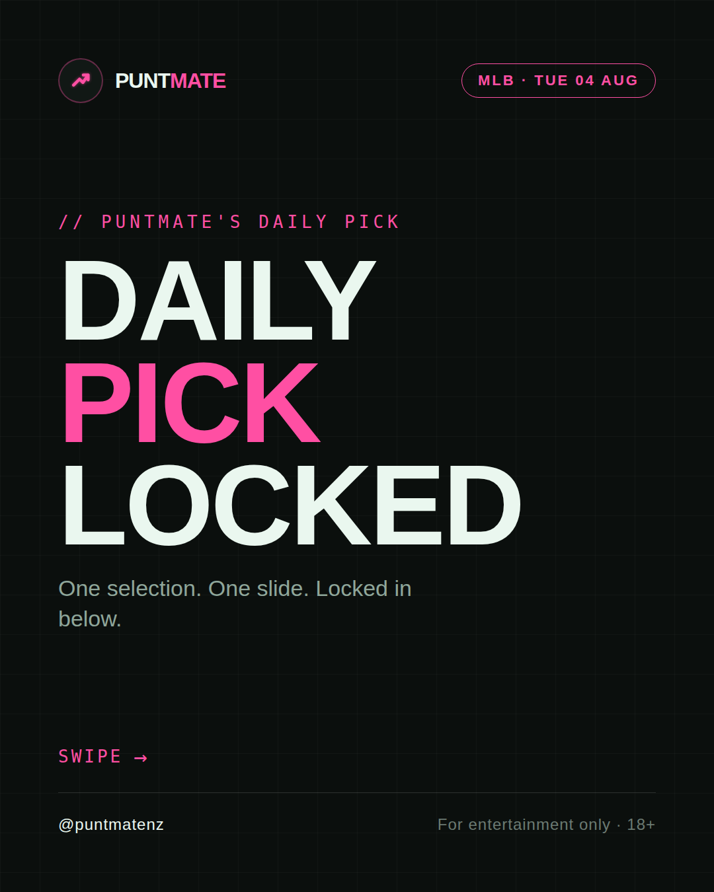
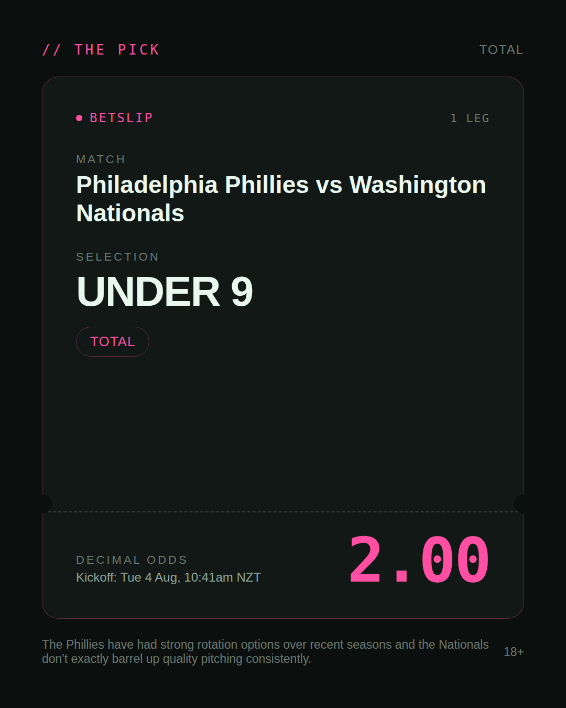
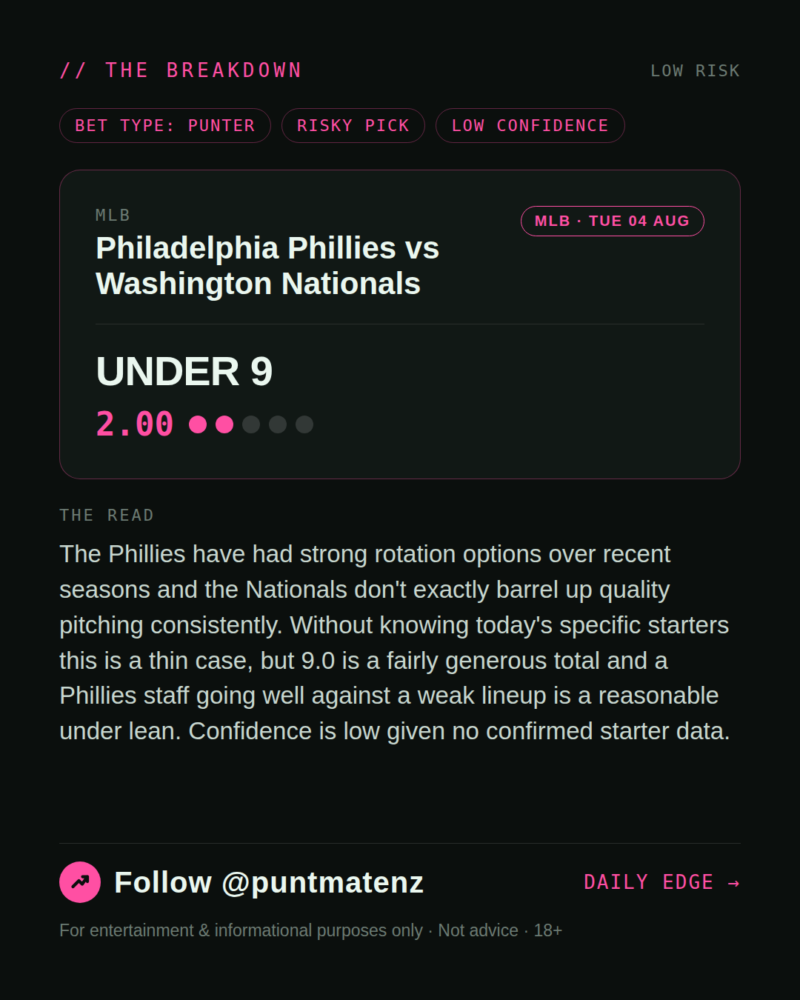
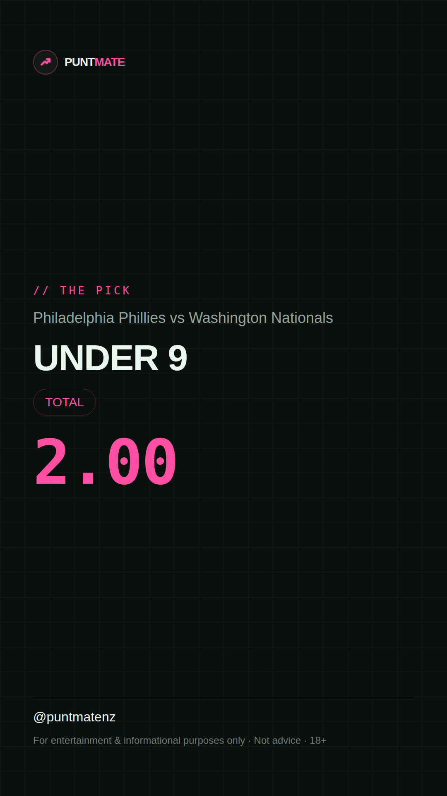

*🎯 PUNTMATE NZ — MLB* 🏟 Philadelphia Phillies vs Washington Nationals *PICK:* UNDER 9 *ODDS:* 2.00 (Total) *BET TYPE: PUNTER* _The Phillies have had strong rotation options over recent seasons and the Nationals don't exactly barrel up quality pitching consistently. Without knowing today's specific starters this is a thin case, but 9.0 is a fairly generous total and a Phillies staff going well against a weak lineup is a reasonable under lean. Confidence is low given no confirmed starter data._ ────────────────── 📲 Join Telegram for daily picks ⚠️ For entertainment & informational purposes only. Not advice. 18+.
🎯 MLB — Philadelphia Phillies vs Washington Nationals UNDER 9 @ 2.00 (Total) BET TYPE: PUNTER Solid touch here. Not a lock, but the value's real and the form backs it up. The Phillies have had strong rotation options over recent seasons and the Nationals don't exactly barrel up quality pitching consistently. Without knowing today's specific starters this is a thin case, but 9.0 is a fairly generous total and a Phillies staff going well against a weak lineup is a reasonable under lean. Confidence is low given no confirmed starter data. Follow for daily value picks → @puntmatenz ⚠️ For entertainment & informational purposes only. Not advice. 18+. #PuntmateNZ #SportsBetting #NZTAB #MLB
| has_pick | True |
| pick_id | 2026-08-03_Philadelphia_Phillies_vs_Washington_Nationals |
| run_id | 30853499502 |
| generated_at | 2026-08-03T21:12:20.047950+00:00 |
| post_date | 2026-08-03 |
| match | Philadelphia Phillies vs Washington Nationals |
| sport | baseball_mlb |
| sport_label | MLB |
| market | Total |
| selection | UNDER 9 |
| odds | 2.00 |
| bet_type | PUNTER_BET |
| bet_type_label | BET TYPE: PUNTER |
| bet_type_reason | Solid touch here. Not a lock, but the value's real and the form backs it up. The Phillies have had strong rotation options over recent seasons and the Nationals don't exactly barrel up quality pitching consistently. Without knowing today's specific starters this is a thin case, but 9.0 is a fairly generous total and a Phillies staff going well against a weak lineup is a reasonable under lean. Confidence is low given no confirmed starter data. |
| classification | RISKY_PICK |
| risk | RISKY_PICK |
| confidence | LOW |
| confidence_label | LOW |
| final_explanation | The Phillies have had strong rotation options over recent seasons and the Nationals don't exactly barrel up quality pitching consistently. Without knowing today's specific starters this is a thin case, but 9.0 is a fairly generous total and a Phillies staff going well against a weak lineup is a reasonable under lean. Confidence is low given no confirmed starter data. |
| public_caution | Keep this one light — the value's there but so is the uncertainty. |
| theme | night |
| carousel_paths | ['data/review/2026-08-03_Philadelphia_Phillies_vs_Washington_Nationals/cover.png', 'data/review/2026-08-03_Philadelphia_Phillies_vs_Washington_Nationals/tip.png', 'data/review/2026-08-03_Philadelphia_Phillies_vs_Washington_Nationals/breakdown.png'] |
| carousel_urls | ['https://raw.githubusercontent.com/kingofthecastle24/puntmate/main/data/cards/2026-08-03_Philadelphia_Phillies_vs_Washington_Nationals_night_1_cover.png', 'https://raw.githubusercontent.com/kingofthecastle24/puntmate/main/data/cards/2026-08-03_Philadelphia_Phillies_vs_Washington_Nationals_night_2_tip.png', 'https://raw.githubusercontent.com/kingofthecastle24/puntmate/main/data/cards/2026-08-03_Philadelphia_Phillies_vs_Washington_Nationals_night_3_breakdown.png'] |
| story_path | data/review/2026-08-03_Philadelphia_Phillies_vs_Washington_Nationals/story.png |
| story_url | https://raw.githubusercontent.com/kingofthecastle24/puntmate/main/data/cards/2026-08-03_Philadelphia_Phillies_vs_Washington_Nationals_night_story.png |
| intended_platforms | ['telegram', 'instagram_feed', 'instagram_story', 'facebook'] |
| workflow_state | GENERATED |
| has_punter_multi | False |
| has_gambler_multi | False |
| has_degenerate_multi | False |